Meet Glint — Web3, with a smile.
Glint is a crypto app built to make powerful blockchain actions feel easy, human, and joyful.
We bridge the gap between complex Web3 technology and everyday user experiences — all wrapped in a fun, modern brand that feels nothing like “finance.”
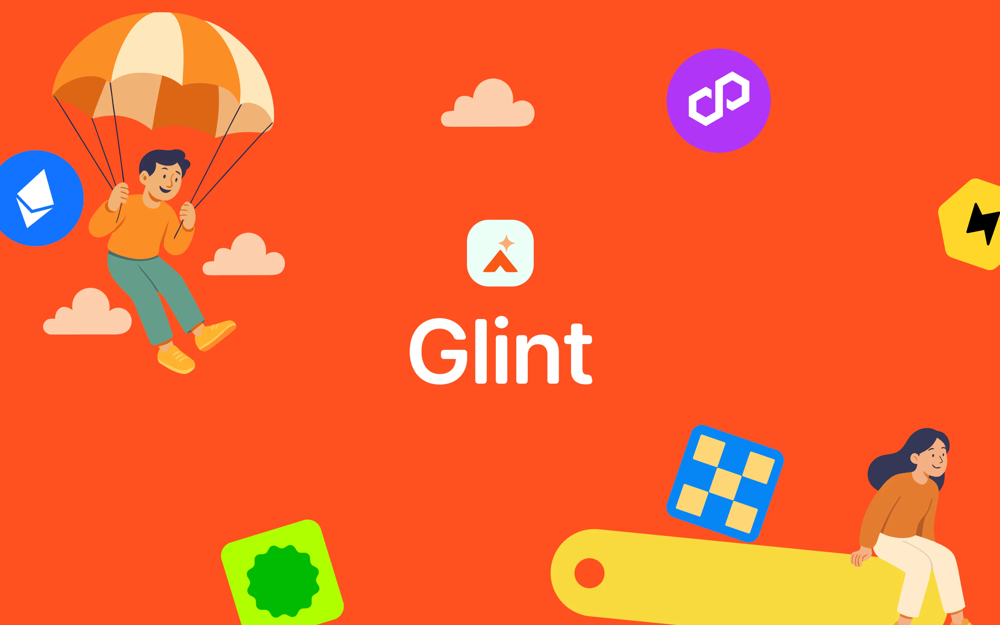
01 — The Problem
The gap we noticed
Existing crypto apps are built for people fluent in tokens, wallets, and Twitter threads.
Everyone else? Left out.
Glint was built to remove the friction, hide the tech, and speak human.
Most apps still speak in chains, tokens, and tech jargon. They’re built for Twitter-native crypto heads, not real people.
Glint strips away the noise. It abstracts the chain, simplifies the swap, and lets users do what they came to do — without needing to understand what’s under the hood.
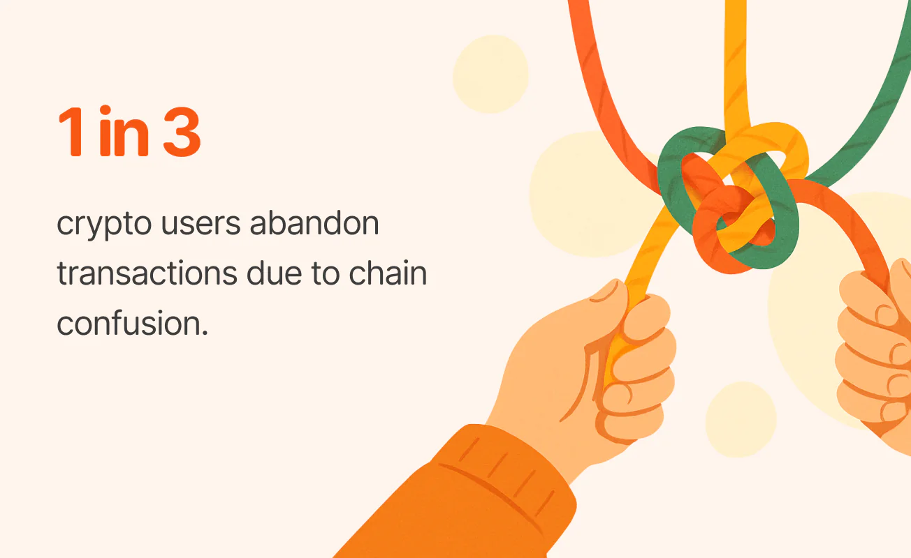
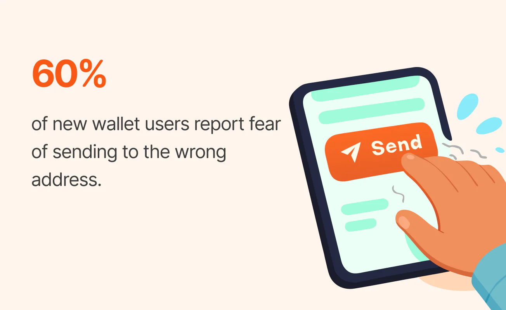
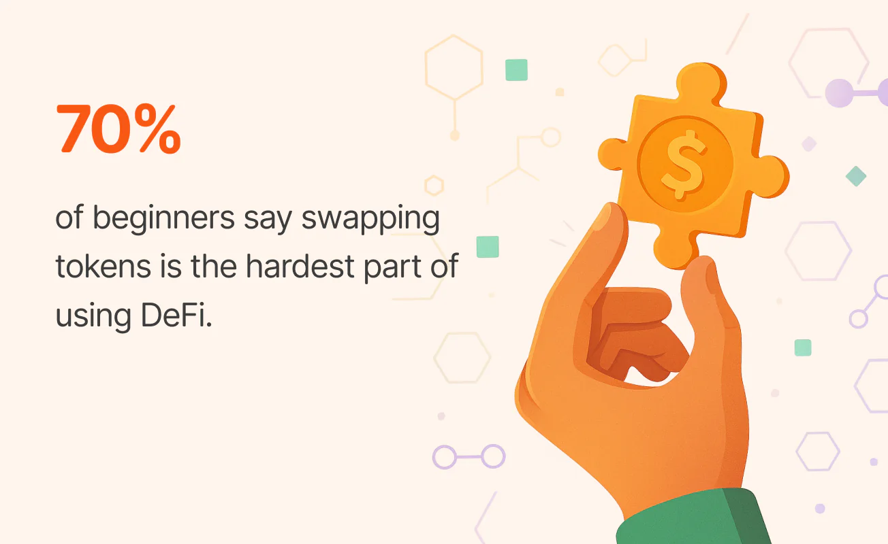
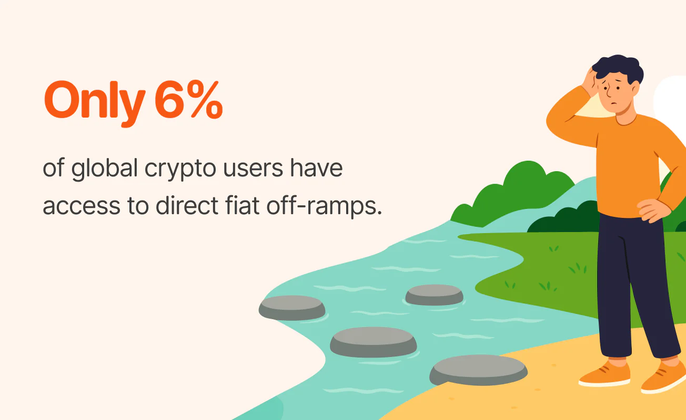
02 — The Design Direction
A style that actually vibes with you
Glint’s design system was built to feel warm, clear, and full of life. From the bold color palette to our playful illustrations and soft custom icons, everything works together to make complex crypto actions feel simple and human.
Our typeface, Open Runde, adds just the right balance of friendliness and clarity — keeping the brand approachable at every touchpoint.
Glint’s color palette is designed to feel bold, modern, and trustworthy. We combine energetic orange with a calming green and grounded neutrals to create a visual experience that’s both playful and clear.
The balance of warmth and structure helps guide users through actions confidently — without overwhelming them.
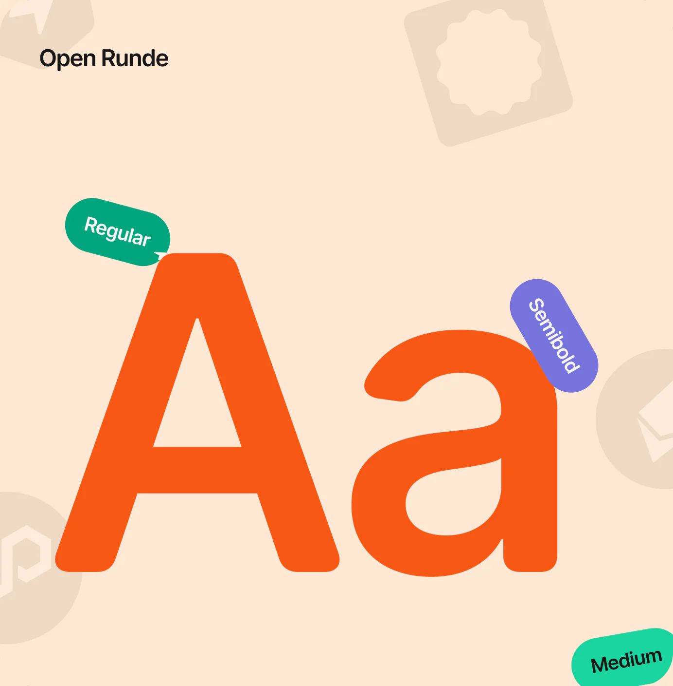
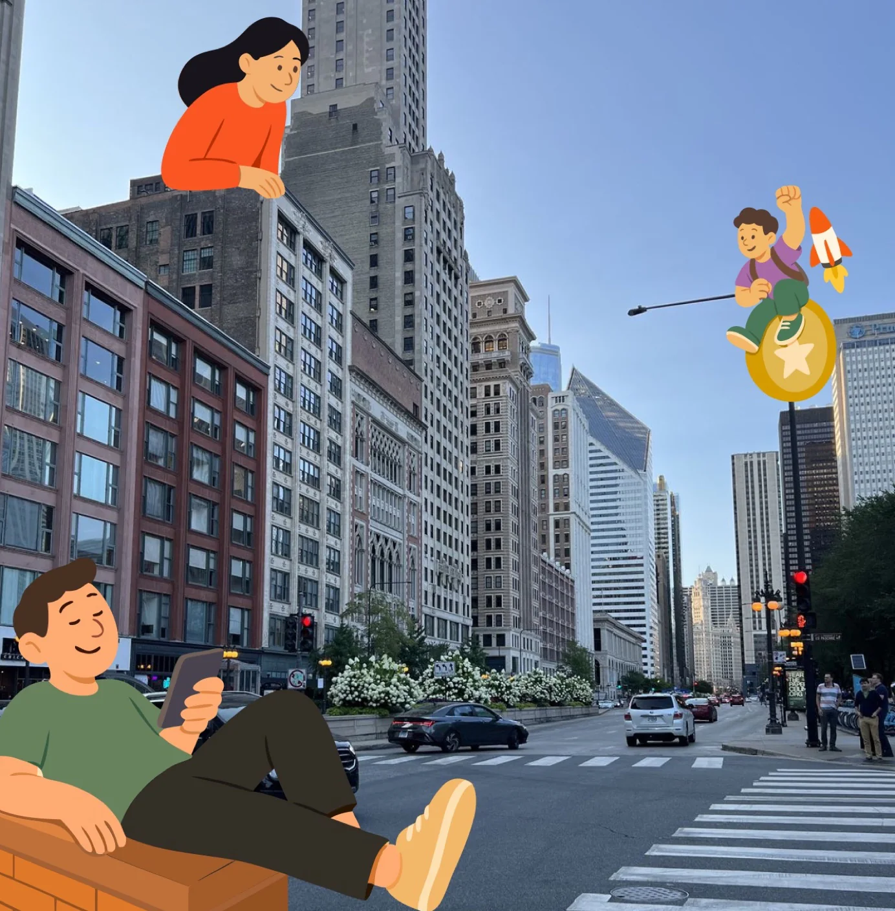
Pumpkin Orange
#F75814
Mint Green
#00CA98
Raising Black
#171717
Charcoal Grey
#6D6D6D
03 — The Product
A home screen that doesn’t ask questions
The Glint home screen was designed to feel as effortless as a conversation.
Behind the scenes, the app handles complex logic — from chain abstraction to cross-network swaps — but what the user sees is calm, intuitive, and welcoming.
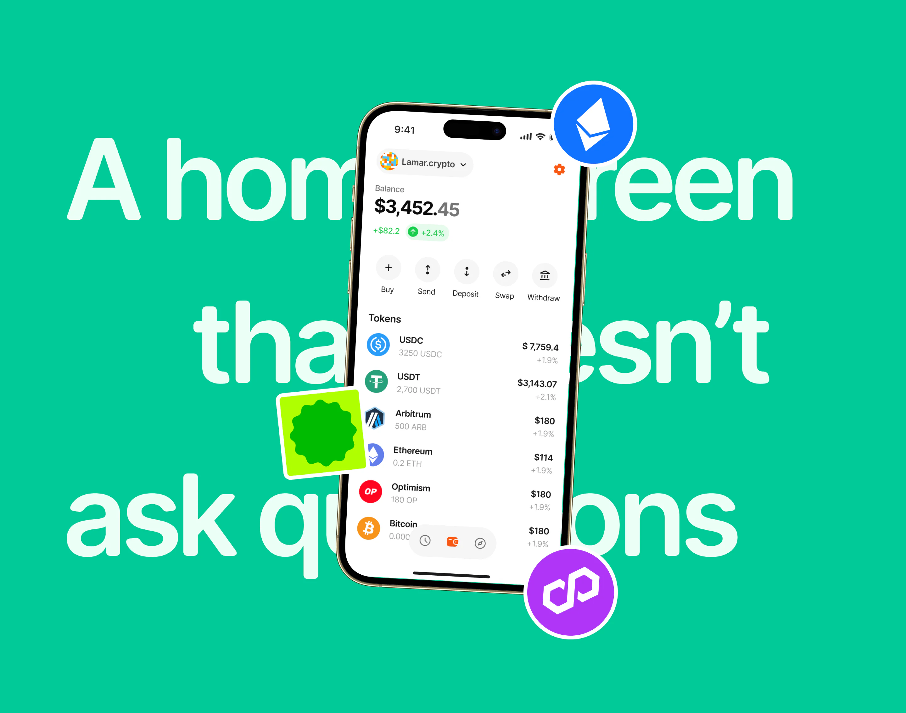
04 — Send Crypto
Just pick a name, not a chain
Sending crypto on Glint feels more like sending a DM than wiring tokens across fragmented ecosystems.
You select a token, type in a name — like bobuzy.crypto — and that’s it.
No need to ask what network they’re on, no triple-checking contract addresses, no switching chains manually.
Under the hood, Glint quietly verifies what networks the recipient supports, finds the most compatible path, and delivers the token exactly where it needs to go.
If you’re sending USDC and they receive on Solana? Handled.
If they prefer ETH on Base? Still handled.
There’s no friction, no fear — just a flow that feels obvious.
No chains. No stress. Just send.
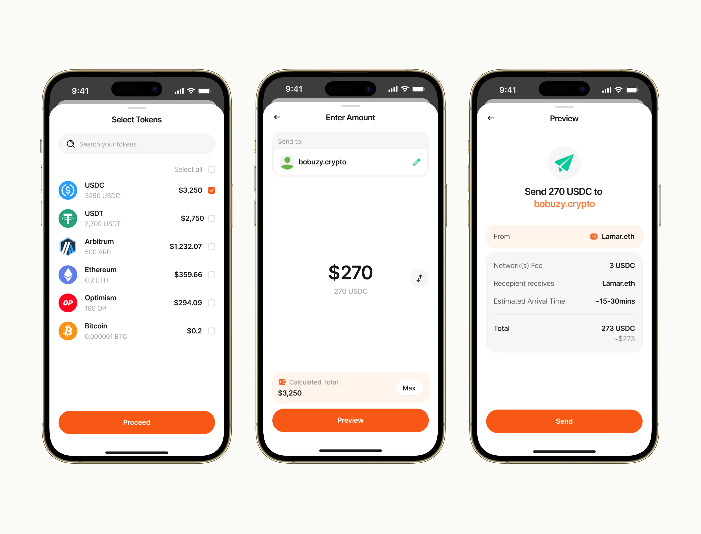
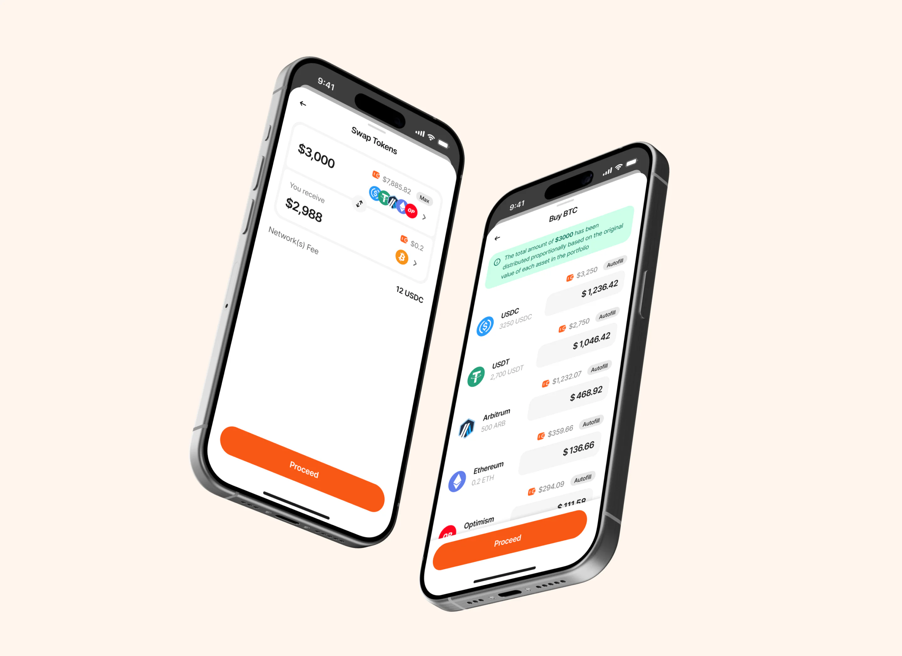
05 — The Experience
One tap to rule them all
Glint abstracts away the complexity that usually comes with interacting across multiple blockchain networks.
Instead of making users understand chains, networks, bridges, and technical infrastructure, the experience puts the action first.
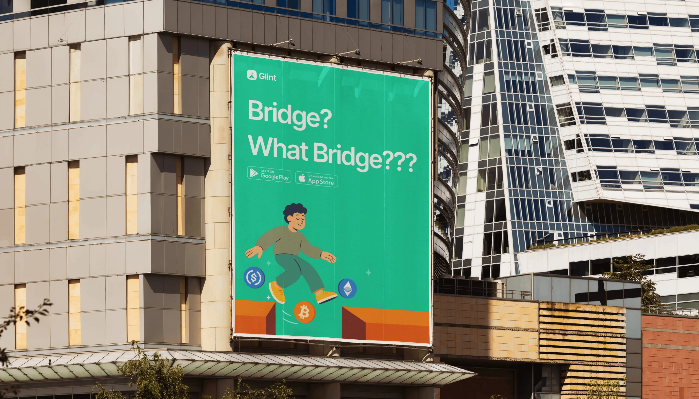
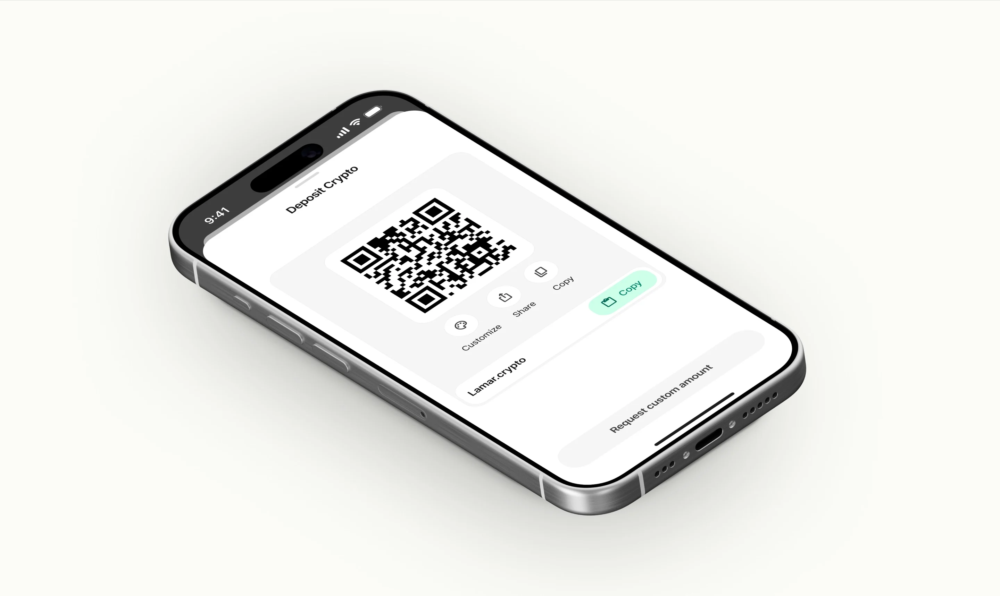
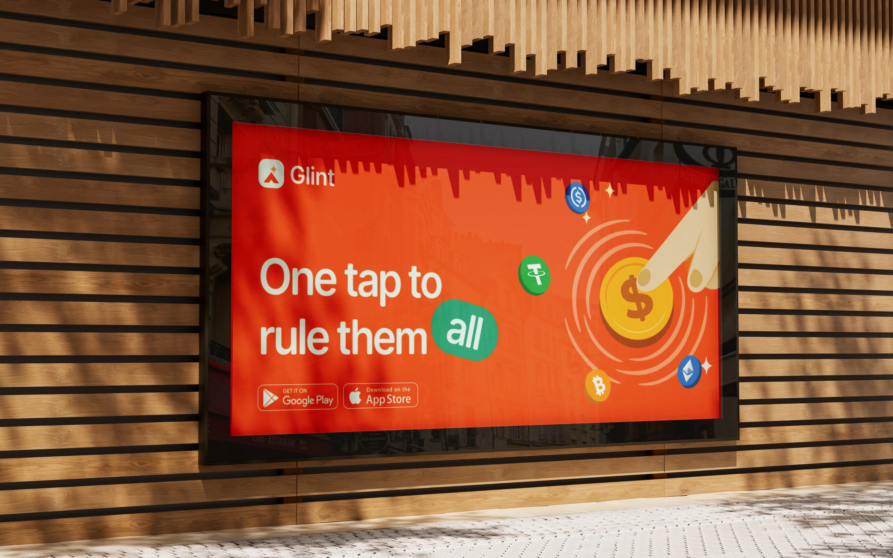
The technology stays in the background.
The user gets a simple, familiar experience.